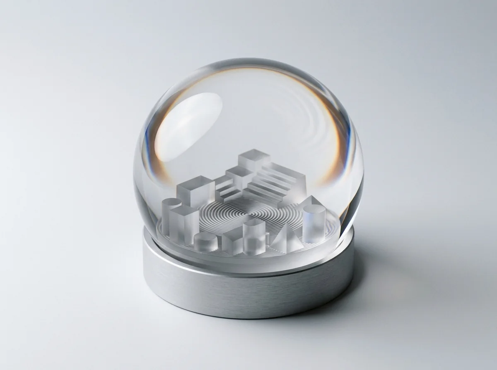
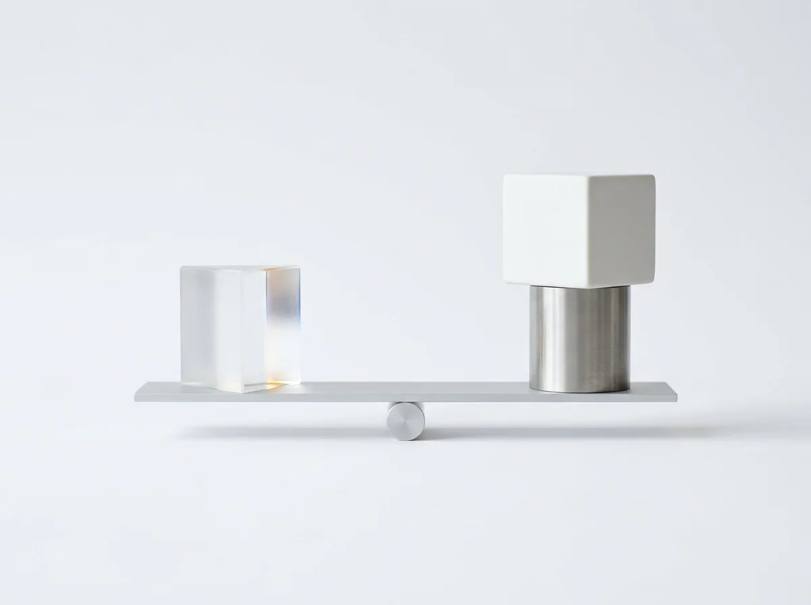

World Models
DeepMind Genie 4 Generates Interactive 3D Worlds With Native Sound
Steer real-time physics, spatial environments, and live dialogue on the fly from plain natural language.


Steer real-time physics, spatial environments, and live dialogue on the fly from plain natural language.

Inspect live agent bounding boxes, calculate Workspace ROI, or judge Gemini against rival frontier models.
Our three-part plain-English breakdown translates Google’s flagship release into concrete security workflows and 95% cache savings.
Follow our two-part Rosetta Stone guide from fragile PHP plugins and phpMyAdmin to Firebase and Antigravity.
Start free forever with our starter plugin, or unlock fifty battle-tested business prompts without another monthly subscription.
GenAI SDK v2.32 adds native continuation tokens so million-token workflows never drop mid-stream.
intent explanations and prompt-injection defense.gemini-3.8-flash ($0.75/1M) & gemini-4-argon.gemini-4-argon.automatic_continuation on client.interactions.create().